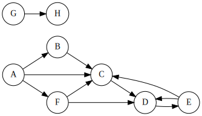

This is a friendly reminder on the class policy regarding the use of GenAI on programming assignments in this course. While you may use GenAI to do the equivalent of looking up known information on the web / in a manual, you may NOT use GenAI to generate the solution to any part of this programming assignment. The purpose of the assignment is to practice your problem solving and programming implementation skills on your own. If we find that you have copied significant code generated by AI for this programming assignment, this will be considered an honor violation.
You are hired by the Disease Suppression Agency (DSA) to do contact tracing for a recent outbreak of Monday-itis. This is a serious disease! It apparently is quite infectious from one person to another.
The DSA folks have provided you with a list of contacts that people with Monday-itis have had, helping to indicate who transmitted it to whom. To help sort out the ordering, you have to write a program to determine the total pathogen load on a given individual in the contact trace.
Apparently there are multiple ways a person can come into contact with the Monday-itis pathogen (note that contacts are in a specific single direction only):
These types of contacts can be represented as the edges of a depth-first search – the edge types are listed in the list above. Each type of contact provides a different (integer) pathogen load to the individual. The amount of those pathogen loads are provided in each test case.
We will assume, for simplicity sake, that the DFS always proceeds in alphabetical order of the possible adjacent nodes.
Consider the following contact trace graph:

If we run DFS on it, starting at A, we get the following result. In the graph below, double edges are tree edges, dotted are forward edges, dashed are back edges, and bold edges are cross edges. Regular edges (the one from G to H) were not encountered in the DFS, which started at node A. Recall that when in a given node, we always process the outgoing edges alphabetically.

Assume that the pathogen load for each type of contact is (10,5,3,4) – this means 10 for an incoming tree edge, 5 for an incoming forward edge, 3 for an incoming back edge, and 4 for an incoming cross edge. The various nodes would have the following pathogen load:
If there is a node to which there is no path from the start node, such as nodes G and H in the graph above, then the answer is 0 (these were people that were not infected).
The first line of the input file will contain the total number of test cases c in the file, where 1 ≤ c ≤ 105.
Each test case will have exactly four lines:
int, so use a long (if appropriate for your programming language).For each test case, the (single) integer pathogen load of the designated node should be output. Any given output value may exceed the size of an int, but will fit into a long.
The input below, for all four test cases, corresponds to the graph above. The only difference is the node to print the pathogen load for – it is nodes C, D, F, and H, respectively. This input is provided in the example.in file.
4
10 5 3 4
8 11
A B B C C D D E A C A F E C E D F C F D G H
A C
10 5 3 4
8 11
A B B C C D D E A C A F E C E D F C F D G H
A D
10 5 3 4
8 11
A B B C C D D E A C A F E C E D F C F D G H
A F
10 5 3 4
8 11
A B B C C D D E A C A F E C E D F C F D G H
A H22
17
10
0We are providing skeleton code for this assignment. You should start with pa1.py or PA1.java. This code reads in the input described above.
long type for some programming languages (C, C++, Java, etc.). Other languages (Python) will not need to worry about this.The submission system can handle four different programming languages, although only two have skeleton code provided (Python and Java). For each programming language, the name of the submitted file is listed below (you have to have it named that exact name, else it will not compile properly). If you want to program in a different language, email the course email at least three days before it is due (as we have to reconfigure the autograder).
You will submit your completed source code file to Gradescope. There will be a small set of acceptance tests that are NOT COMPREHENSIVE. These acceptance tests are the test cases in the example.in file. It’s up to you to comprehensively test your code. The acceptance tests just verify that you are reading the input correctly and providing the expected output.
Note that when you submit, Gradescope will report your grade as “-/10” or “0/10” – that’s a quirk of Gradescope, and is because the grading tests have not been run (and won’t be run until after all submissions are in). YOu can look at the results of the individual test cases to see how your program worked